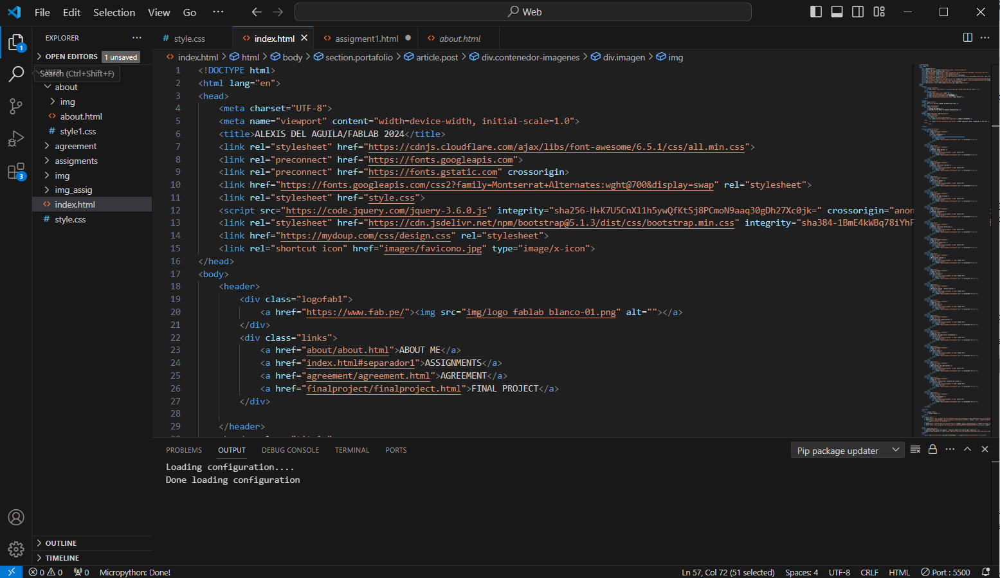
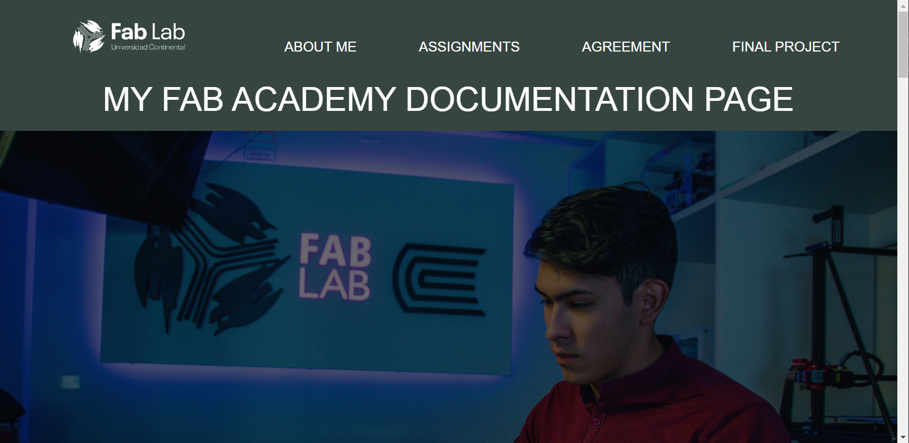
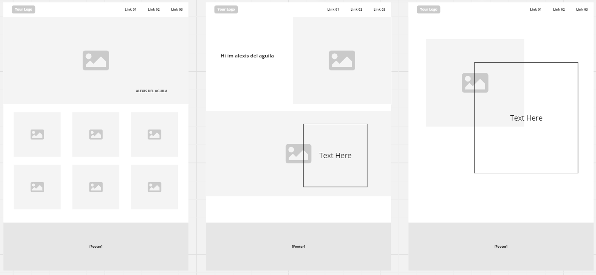
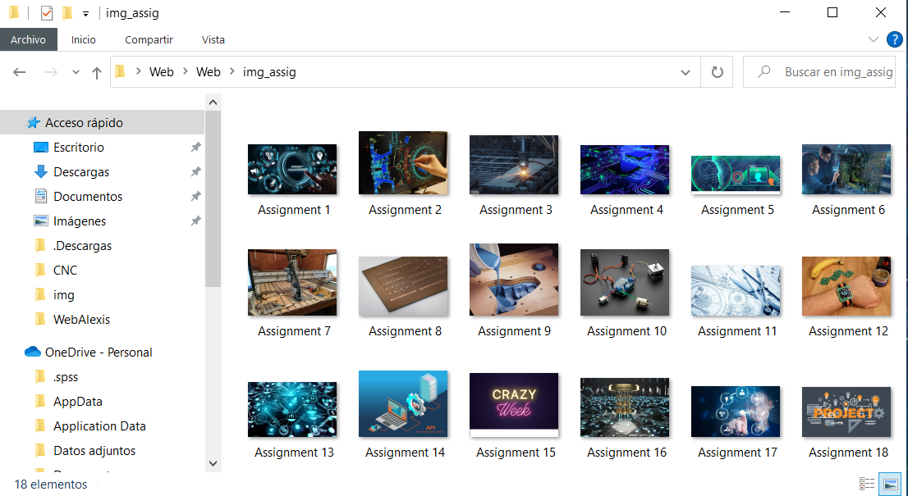
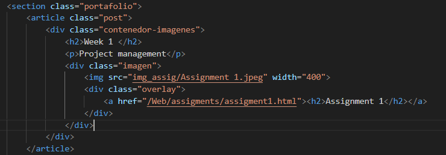
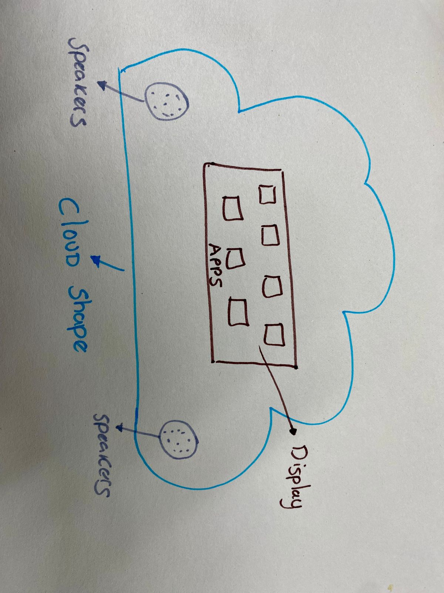

STEP 1: We have to download and install the GIT program that we can find in our search engine. On the other hand, we can also take the opportunity to download the VISUAL STUDIO CODE that will help us clone our repository to our local "local, I mean our computer".
STEP 2: While the programs are downloading we can enter our GITLAB account to know 3 important things:
STEP 1: We open our VISUAL STUDIO CODE to start cloning our remote repository.
STEP 2: Now we only have to work on all the changes and updates in the VISUAL STUDIO CODE and it gives us the ease of being able to do the COMMIT and PUSH when necessary. Remember to make big changes and not just small changes.
And now you can design, play, enjoy and improve your website.
In the chapters ahead, we'll unravel the intricacies of bringing your ideas to life online. From defining the purpose of your website to selecting the perfect platform, and from adding your unique flair through design to making it function seamlessly, I've got you covered. Together, we'll navigate the sometimes confusing and often exhilarating world of website creation.
First, I started to design a wireframe to get an idea of how the page would be laid out. Sketching out the skeletal structure of my website allowed me to visualize the placement of key elements, like navigation menus, content sections, and any interactive features I wanted to incorporate. It was like creating a blueprint for my digital space.
With the wireframe as my guiding compass and the design elements in place, the next phase of the journey led me into the realm of coding. It was time to breathe life into my vision and transform the static design into an interactive and functional website.
When we have all the images, we upload them to VISUAL STUDIO CODE, in our HTML or SCC, to be able to display them on our website:
And we can see our images on our website.

Attention deficit hyperactivity disorder is one of the neurodevelopmental disorders that manifests in childhood and usually lasts until adulthood, according to InfoMED 5% of the child population is affected by this syndrome, it is common in these cases the difficulties to attend, some children talk so much and fast that they forget the words, have a different pace of learning, they are usually restless . The main characteristics are hyperactivity, impulsivity and poor attention span. The prevalence is between 2% and 12% in infants and in adults it is estimated b e t w e e n 2.5% and 5%; likewise ADHD begins to reveal itself before the age of 7 years compared to girls, boys comprise 4 to 1 because they are the most likely to suffer from this disorder.
In these conditions it is very important to improve learning using various techniques such as self-instruction, this aims to achieve the academic integration of the individual. There are 3 types of mild ADHD when the child has difficulty remaining still or sitting in the classroom, moderate ADHD presents difficulty in maintaining attention and has impulsive behavior, severe ADHD persists with attention problems and in this case should be medicated.
My project idea is based on the development of a tool generated with digital fabrication. This tool will allow us to enhance learning and provide support to children with attention deficit hyperactivity disorder (ADHD), creating a space for greater concentration through various musical and visual elements. It will take the friendly form of a cloud, which will possess a teaching system through educational apps, all aimed at improving the child's level of concentration.
It will look like this:
This project will help improve the quality of education and increase concentration in children in a didactic and playful manner.